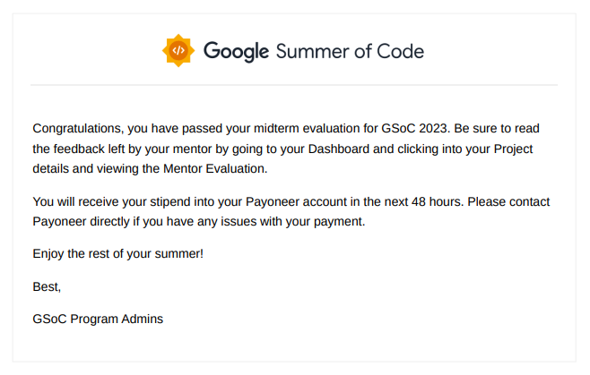
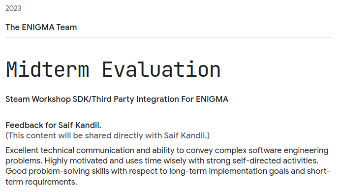

This blog post is related to my Google Summer of Code 2023 project: Steam Workshop SDK/Third Party Integration For ENIGMA .
Before talking about how the evaluation works for me, let's talk about some things
that I leaned during the past week. First of all I for the first time understood
how extern works in c++. Let me explain a bit. When you define a variable
in the header file and initialize it in the source file, then try to include that header
file in multiple source files, you will get a linker error. This is because the linker
tracked multiple definitions of the same variable. To solve this problem, the definition
will be in the source file, and extern to this variable in the header file
like so:
// leaderboards.cpp
unsigned lb_max_entries{10};
// leaderboards.h
extern unsigned lb_max_entries;
Another thing I learned is that compilers has unexpected behavior so you must be careful
especially when you are using a build system such as GNU Make. Employ macros for header
guards and extern instead of normal definitions. Actually, when working on
something like this, you must do it step by step. If you wrote a whole bunch of lines at
once, it's very likely going to fail. Even with very deep understanding of the buid system
and the compiler theory. That's just uncontrolled complexity.
The evaluation is going great actually, and no problems at all.
@Saif / @Fares Atef in case this isn't clear to you, you're both getting good marks on your midterm evaluations; I hope neither of you is stressing about timing
Josh — 27/07/2023 05:06
The midterm evaluation is just a couple of questions Google asks to you by using a simple form such as if I were a GSoC student in 2022, or how many weeks I have been contributing to my organization before applying to GSoC 2023 ...etc. I won't bother myself with it more than that. I will just take some rest to take care of other stuff in my life.
The TODO for the next phase now became bigger and bigger:
- Implement the rest APIs.
- Getting an
AppIdand upload a game on Steam for testing. - Creating SOGs and trying to make it work as I mentioned earlier that it's tricky because we need Steam to be running in order the tests to pass.
- Cleaning up and organizing the new Async System to match Robert's needs.
-
Checking if
Callbacksuses Threads. If so then try to handle the State Management manually. -
For functions such as
steam_download_scores, withidto be saved for each download request, I will use the new ENIGMA's approach for that with is:AssetArrayfromUniversal System.
And don't forget of course the minor tasks for the documentation:
- CPP source files need to be documented.
- Check the license for committing DLLs and headers.
- Check Steamworks's official example comments.
- Check GMS Manual for documenting user function's layer.
Another special TODO:
- Check Robert's PR #2349
- Fixing Steam.exe as it's not showing up and this going to make me crazy.
Issues solved:
- Implementing ENIGMA's new thread-safe
Async System(as the old one is not thread safe).

Here's my feedback from my mentors after passing the midterm evaluation:

Let's take a break for now and see you soon.
im gonna take a rest to take care of other stuff a couple of days i think
Saif — 27/07/2023 05:02
that's totally fine, please do, it'll be good to get some rest
you've been touching on some really complex topics here tbh lol
so i get the need for some rest
R0bert — 27/07/2023 05:02
thanks to u bascially 👍 😁
Saif — 27/07/2023 05:03
lol yeah i like to tear things apart to make sure i understand them correctly myself
that's partly why i'm digging
it took me a while to understand async proper
R0bert — 27/07/2023 05:04
Actually, it's not full rest but I need it anyway.